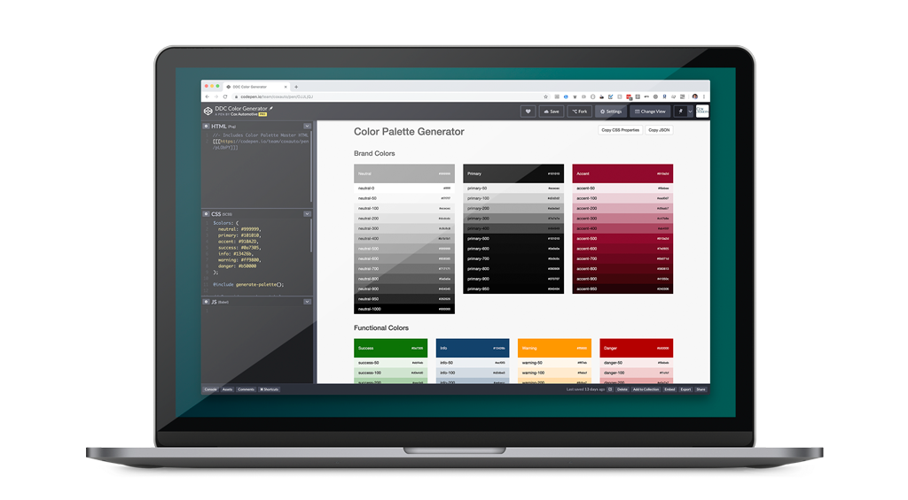

Design System
A typical design system is a highly valuable resource that synchronizes entire teams of designers and developers (and everyone in their ecosystem hopefully). It might define typography, animation, buttons, form elements and much more. They are inherently complex but super-useful, removing the need to rethink every element every time. Just add a button or a heading.
The Dealer.com Design System
Dealer.com is pretty unique in that we have a lot of standardized pages and systems for upwards of 15,000 dealerships. They, of course, do not all want to look the same, so our design system has to support that. That means we can not just define one primary large button, but rather have our buttons support a range of customizations like case, shape, background color, padding, etc. This is relatively easy to support in code but is impossible to support in a design environment like Sketch.
Utilizing Sketch
As mentioned above, we can not readily support a wide range of variations in Sketch, but I did do a lot of work getting symbols setup to support skinning for specific clients. Instead of updating each button element, I created nested symbols where you only need to change one property to change the button shape, for example.
Pattern Library
Engineering started a pattern library that was visible on any client site so anyone could see the range of elements available. I have both created a version of that in Sketch for designers, as well as recreating it in a codepen to facilitate the rapid creation of accurate prototypes.

Colors
Colors were one of the more complex elements to get right in our design system. We worked hard as a team to create a range of colors for primary, neutral, accent and other colors that included lighter and darker shades. I created a codepen application that allows designers to input specific hex colors for the midpoint and it generates shades of color based on a custom algorithm. This allows designers to rapidly create a complete color palette, and to hand off the palette to developers in one click.
